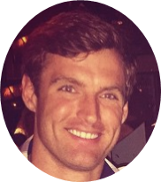
beischen
658 Tremont Street Boston, MA
beischen Welcome to my curated instagram feed to give the MIT Sloan admissions committee a feel for who I am and what I will bring to the community outside my professional background. #whoami? #heregoesnothing #mylifeinanutshell
beischen
Garney Road
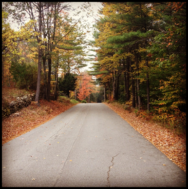
beischen Here is an artsy picture of the road I grew up on in rural Brookfield, NH. #fall #middleofnowhere #woodsofnh #populationunder700 #treecanopy
beischen
Epiphany Farm
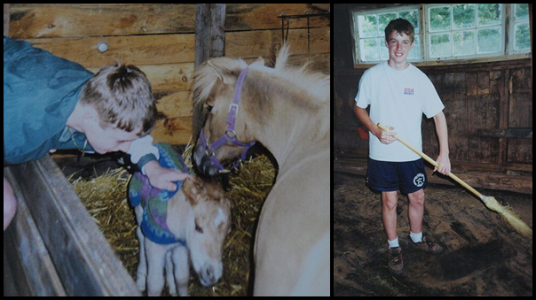
beischen I spent five years living on a petting farm where we had horses, goats, pigs, llamas, sheep, chickens among others. #minihorse #babyminihorse #hardlabor #throwinghaybales #muckingstalls
beischen
Abenaki Skating Rink
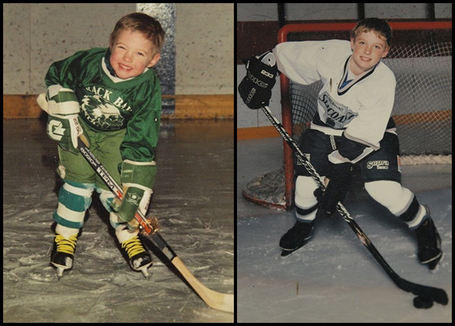
beischen Hockey was my first passion and played a huge part in my development. Hockey gave me a work ethic, instilled confidence, and made me see beyond my small town. #hockeytough #cheese #takethepicturealready
beischen
The Northeast
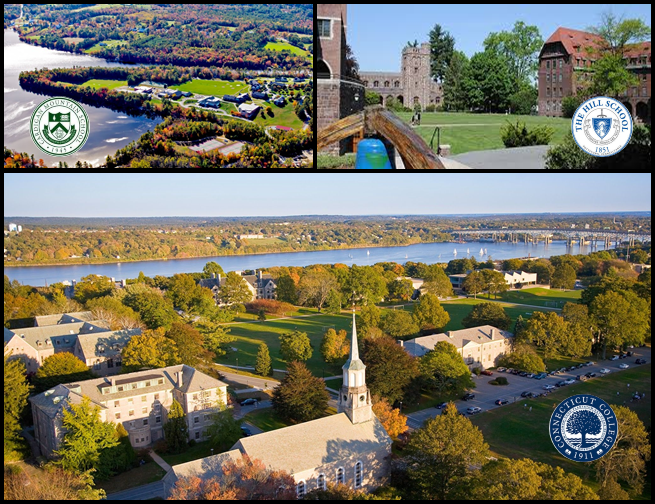
beischen Despite my family’s modest income, hockey gave me the opportunity to leave home at the age of thirteen to attend incredible institutions. I thrived in an environment where I could excel in top level athletics and academics. #preppy #dormlife #cafateriafood #tradition #prettycampus #thesekidsaresmart #community #teachersareourfriends
beischen
New London, CT
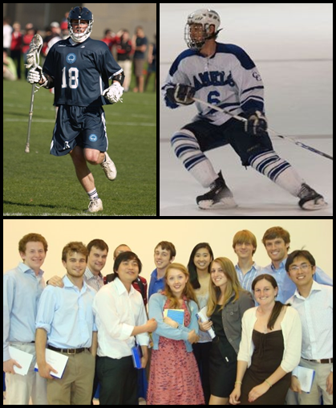
beischen During college I led a dual life as a member of two varsity sports teams as well a separate team dedicated to mathematics. #jockquant #mathematicsofsport #mathbuddies #allacademicteam #NESCAC
beischen
Boston, MA
beischen My combination of quantitative skills and teamwork experience led me to be recruited by the investment firm Windham Capital Management. #myfavoriteviewofboston #sunset #farmtocity #bostonstrong
beischen
Boston, MA
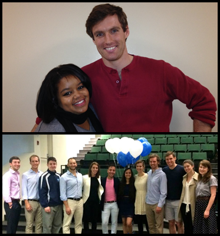
beischen Minds Matter Boston helps disadvantaged inner city kids get into college. I joined six years ago as a mentor to Suilisa (top picture). Eventually I took on leadership roles as co-director of summer programs and co-director of alumni. The whole experience has been incredibly rewarding. #thesekidsaresmart #givingback #educationispower #disadvantagedtoadvantaged
beischen
209 Columbus Ave
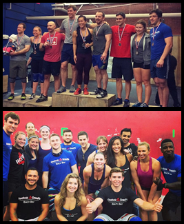
beischen CrossFit helps me to stay in shape and fuel my competitive fire now that I'm no longer involved in competitive sports. In addition, the community is incredibly fun and supportive. #pickthingsupandputthemdown #functionalfitness #firstplace #deathbyburpees
beischen
Nature
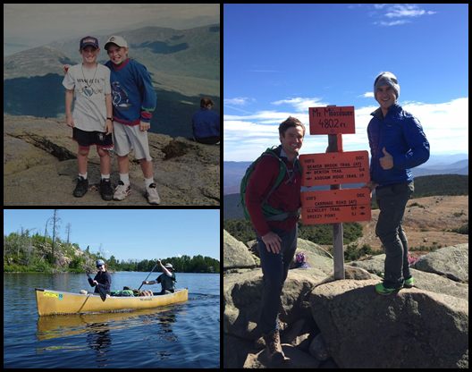
beischen Growing up in the outdoors, I will always have an affinity for fresh air and adventure. #hikethewhites #boundrywaterscanoearea #thumbsup #checkoutthatview
beischen
All Over Europe
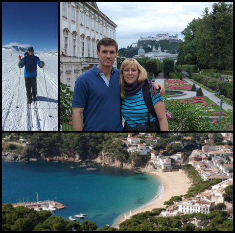
beischen Through college I was largely unable to travel due to time and cost constraints. Post college I developed a passion for finding the local experience. Cross country skiing in Norway, traveling through Austria with my German cousin, and spending time with my friend’s family in Spain have been the highlights so far. #squidinkpaella #llafranc #realskiing #saltzburgcastle #sprechensiedeutsche?
beischen
30 Memorial Dr, Cambridge, MA
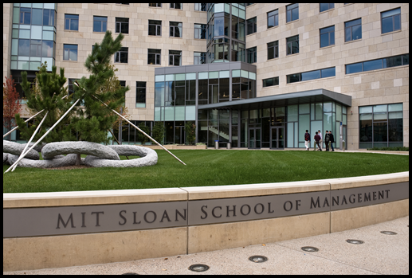
beischen In addition to my professional experiences, my broad personal interests will allow me to be an active member of the MIT Sloan community. I am anxious to embark on new experiences with my future classmates! #cambridge #Sloan #MBA #nextsteps #investininyourself